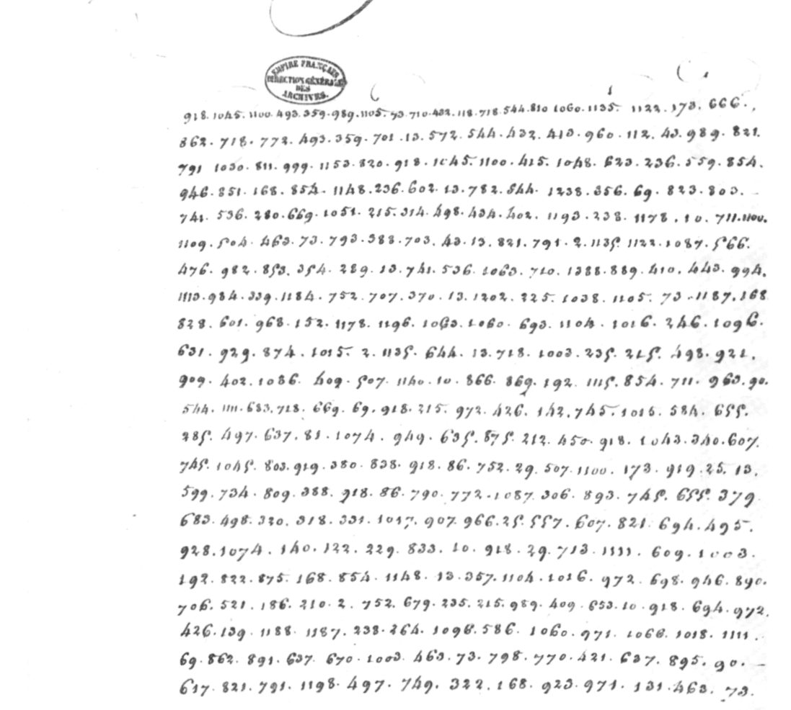

At a glanceKnown key applied · complete
- The letter
- A dispatch to the Emperor, filed in the Archives nationales as a duplicate in Berthier’s cipher and printed as such in 1969. It is page 3 of a letter of King Joseph of Spain, written in Spain in December 1812. The cryptogram is a duplicate; only this page is published.
- Where
- Plate after p. 24 of J. Vilcoq, “Le Chiffre sous le Premier Empire”, Revue historique de l’Armée 1969 no. 4 (on Persée), captioned Archives nationales and dated 22 December 1812. The folder here is
targets/napoleon/; it was catalogued as unsolved by S. Tomokiyo on Cryptiana. - The cipher
- A numeric code of about 1,200 groups (2–1388): the Grand Chiffre of 1812, the code of the French armies in Spain, with several groups for frequent words. 325 groups are printed, 207 distinct, 132 of them used once.
- How it was read
- With the French deciphering table of the time (Service historique de la Défense, “B n° 30”), whose cells Brice Dudout read on Jean-François Bouchaudy’s photographs. French letter-sequence scores of the decode beat all 1,000 decodings with the table’s values shuffled.
- What it says
- Joseph has had no news of Napoleon since he left Paris, no returns of the Army of the North of Spain, and his last courier was seized near Valladolid. He sends the Emperor a dispatch of General Reille and begins to propose a remedy.
- Still open
- The rest of the letter: the plate ends in the middle of a sentence and the other pages are not published. In the 325 groups, five restorations from the sense and three probable readings.
- Credit
- Ilia Chirtulov was first to find the key and the writer (reported by S. Tomokiyo on Cryptiana, 12 October 2026). Brice Dudout (Europe chiffrée) then read it independently, working with Claude agents, and sent the reading in on 29 October 2026. The table is at the Service historique de la Défense; the photographs of it are Jean-François Bouchaudy’s.
01 The cryptogram
Vilcoq printed one page of a ciphered dispatch in his 1969 article: three lines of archivist’s notes (“Duplicata”, “Chiffre du Prince de Neufchâtel”, “La Primata a été déchiffrée”), the salutation “Sire,”, then 22 lines of numbers. The caption calls it a letter of 22 December 1812 from Marshal Berthier, Prince of Neuchâtel, to the Emperor. On that basis the cryptogram was filed on Cryptiana among the unsolved.

The earlier attempt in this folder tried the opposite route. Berthier’s letters of December 1812 are printed in clear (Chuquet, 1912, from the same carton, AF/IV/1643), but the cryptogram has no frequency signal to match them with: 64% of its groups occur once against a book of about 1,200 entries, and the 325 printed groups do not align with Chuquet’s letter XXIII. That route stopped there and the result stood as not solved until the table was tried.
02 The cipher
The Grand Chiffre of 1812 is the repertory of 1,200 numbers for letters, syllables and words that the French armies used, extended to 1,400 with additions for Spain (1211 the Army of the Centre, 1214 the English army, 1300 Lord Wellington, 1383 the Tagus). Frequent words have several numbers: here de is 13, 544, 710, 989 and 1060, que 69, 607 and 893. Words that are not in the book are spelled out in syllables (“depuis” is 544 de + 432 puis, “son” is 118 so + 718 n, “Paris” is 1135 pa + 1122 ri + 173 s).
The group numbers run up to 1388, and 1202 (Valladolid), 1238 (the Army of the North of Spain) and 1388 (Salamanca) are Spanish additions: a first sign, before any sentence formed, that the table of Spain was the right one. A different cipher on this folder’s other item, a letter to Marshal Marmont in 1807, has no ciphertext published and no page.
03 How it was read
Brice Dudout tried the ARCSI tables of Imperial great ciphers first: unrelated words. The Great Cipher of 1812 read from the first line: 918 je, 1045 n, 1100 ait, 493 aucun, 359 nouvelles. The 226 cells used were read from Jean-François Bouchaudy’s photographs of the SHD table and are in key_entries.tsv. The same table reads two letters of the French command in Spain in the sibling Jourdan and Marmont, 1812, which has its own page.
- Control. A French 4-gram model trained on an independent text (Berthier’s December letters in Chuquet) scores the decode −2.11 per character. 1,000 decodings with the table’s numbers shuffled score −2.63 at the median and −2.43 at best: none reaches it. Tant’s tables score −2.72 to −2.82.
- The plate re-read. On Persée’s high-resolution image eight groups differ from the online transcription, and each correction makes its passage clear. This also settles the variant noted between the two Cryptiana pages: the plate reads 356, which the table gives as préjudice, while the sense requires 656, quel: a slip of the encoder or copyist.
- The sister letter. Joseph wrote to the Minister of War from Madrid on 23 December 1812 (Du Casse, Mémoires et correspondance du roi Joseph, IX): the same matter, the same phrases, Reille’s enclosed letter and “I knew well … but did not believe it so bad”. It is a confirmation of the content, not a word-for-word collation.
Berthier was then with the remnants of the Grande Armée in East Prussia; the writer is Joseph, who wrote for the Emperor from Spain. Ilia Chirtulov found this first: his result reached S. Tomokiyo on 4 October 2026 and was reported on Cryptiana on 12 October. Brice Dudout’s reading was made independently of it.
04 The reading
The 22 lines read, with the elisions modernised (Brice Dudout’s running text):
« Je n’ai aucunes nouvelles de Votre Majesté depuis son départ de Paris ; je n’ai aucune nouvelle directe de France depuis les lettres du Ministre de la Guerre du cinq octobre. Je n’ai jamais reçu ni compte ni rapport ni état de situation vraisemblable de l’armée du Nord de l’Espagne, quel[le]s qu’aient été mes demandes réitérées à cet égard. J’ai adressé à Votre Majesté impériale et au Ministre de la Guerre à Paris des quadruplicata de mes dépêches de Salamanque, mon dernier courrier ayant été enlevé avec toute la correspondance près de Valladolid. »
“I have had no news from Your Majesty since your departure from Paris; I have had no direct news from France since the letters of the Minister of War of the fifth of October. I have never received any account, any report or any credible return of the state of the Army of the North of Spain, whatever my repeated requests. I have sent Your Imperial Majesty and the Minister of War in Paris quadruplicates of my dispatches from Salamanca, my last courier having been seized, with all the correspondence, near Valladolid.”
The second paragraph, Reille’s dispatch, the concentration of forces and the “remedy” are in the full text below. It ends mid-sentence: “in the event that the war with Russia should continue and that Your Majesty…”. Nothing in the printed page names the king, and the writer is identified by the content, by the table of Spain and by the sister letter.
05 What remains uncertain
Count by the 95% rule, in words (elisions counted as two): 233 words, 225 certain, 3 probable, 5 restored from the sense, 0 unresolved.
- Probable: 559, table “Compagnie, s”, read com- (compte); 1086 sous; 131 [q]ue.
- Restored: 851 ni and 1051 ité, both hidden by a fold of the table in both photographs; 356 read for 656, quel[le]s; 495 table “car” where the word needs cen (concentration); 320 table “C” where exigéat needs t. 325 (paix) stands where a full stop (225) fits, probably a second slip.
- The rest of the letter. The cipher of the other pages is not published, and the Archives nationales original has not been consulted here. The letter is therefore read in the part that exists in print.
- The 1807 Marmont letter. No ciphertext is printed anywhere reachable; it has no page.
Full texts
The transcription and the decryption of every document on this page, so that the reading can be used and checked. Short files are shown here; all are in the repository.
King Joseph to Napoleon, Spain, December 1812 (the 325 printed groups, page 3 of the dispatch)
King Joseph, with no news from the Emperor since he left Paris, reports that his last courier was seized near Valladolid, encloses General Reille's dispatch on the Army of the North and, shaken by it, begins to propose a remedy for the concentration of forces if the Russian war continues. The letter was filed as a duplicate in Berthier's name; its text breaks off at the end of page 3.
Transcription
# Berthier/Joseph cryptogram, 22 Dec 1812: the 325 groups as re-read by Brice Dudout on Vilcoq's 1969 plate (Revue historique des Armées 1969 no. 4, Persée). # Eight groups differ from the online transcription (cryptiana): line 8 1110->1113, 9 1030->1063, 9 690->693, 11 960->963, 12 713->718, 13 605->635, 20 1068->1066, 21 460->463. 918 1045 1100 493 359 989 1105 73 710 432 118 718 544 810 1060 1135 1122 173 666 862 718 772 493 359 701 13 572 544 432 413 960 112 43 989 821 791 1030 811 999 1153 820 918 1045 1100 415 1048 623 236 559 854 946 851 168 854 1148 236 602 13 782 844 1238 356 69 823 803 741 536 280 669 1051 215 314 498 434 402 1193 238 1178 10 711 1100 1109 504 463 73 793 388 703 43 13 821 791 2 1135 1122 1087 566 476 982 853 354 289 13 741 536 1063 710 1388 889 410 443 994 1113 984 339 1184 752 707 370 13 1202 325 1038 1105 73 1187 168 828 601 968 152 1178 1196 1063 1060 693 1104 1016 246 1096 631 929 874 1015 2 1135 644 13 718 1003 235 215 498 921 909 402 1086 409 507 1140 10 866 869 192 1115 854 711 963 90 544 1111 683 718 669 69 918 215 972 426 142 745 1015 584 655 285 497 637 81 1074 949 635 875 212 450 918 1043 340 607 745 1045 803 919 380 838 918 86 752 29 507 1100 173 919 25 13 599 734 809 388 918 86 790 772 1087 306 893 745 655 379 683 498 320 318 331 1017 907 966 25 557 607 821 694 495 928 1074 140 122 229 833 10 918 29 713 1111 609 1003 192 822 875 168 854 1148 13 357 1104 1016 972 698 946 890 706 521 186 210 2 752 679 235 215 989 409 653 10 918 694 972 426 139 1188 1187 238 264 1096 586 1060 971 1066 1018 1111 69 862 891 637 670 1003 463 73 798 770 421 637 895 90 617 821 791 1198 497 749 322 168 923 971 131 463 73
Decryption
# Decryption of transcription.txt (python decode.py): group=first value of its table entry; '.' full stop, ';' semicolon, '¶' new paragraph. 01 918=je 1045=n 1100=ait 493=aucun 359=nouveau 989=de 1105=Votre 73=Majesté 710=de 432=puis 118=so 718=n 544=de 810=par 1060=de 1135=pa 1122=ri 173=s 666=; 02 862=je 718=n 772=ait 493=aucun 359=nouveau 701=direct 13=de 572=France 544=de 432=puis 413=les 960=lettre 112=du 43=Ministre 989=de 821=la 03 791=guerre 1030=du 811=cinq 999=octobre 1153=. 820=¶ 918=je 1045=n 1100=ait 415=ja 1048=mais 623=reçu 236=ni 559=compagnie 854=p 04 946=té 851=[pli: ni?] 168=ra 854=p 1148=port 236=ni 602=État 13=de 782=situation 844=vraisemblable 1238=l'armée du Nord de l'Espagne 356=préjudice 69=que 823=aye 803=été 05 741=me 536=S 280=demande 669=re 1051=[pli] ité 215=re 314=es 498=a 434=cet 402=E 1193=ga 238=R 1178=D 10=. 711=J 1100=ait 06 1109=adresse 504=a 463=votre 73=Majesté 793=impérial 388=et 703=aux 43=Ministre 13=de 821=la 791=guerre 2=a 1135=pa 1122=ri 1087=S 566=des 07 476=qua 982=dra 853=bli 354=ca 289=ta 13=de 741=me 536=S 1063=dépêche 710=de 1388=Salamanque 889=mon 410=dernier 443=courrier 994=ayant 08 1113=été 984=enlèvement 339=avec 1184=tout 752=la 707=correspondant 370=près 13=de 1202=Valladolid 325=paix 1038=¶ 1105=Votre 73=Majesté 1187=trouve 168=ra 09 828=ci 601=jo 968=int 152=copie 1178=D 1196=un 1063=dépêche 1060=de 693=mon 1104=sieur 1016=le 246=général 1096=re 10 631=il 929=le 874=qui 1015=m 2=a 1135=pa 644=ru 13=de 718=n 1003=a 235=tu 215=re 498=a 921=être 11 909=mis 402=E 1086=sous? 409=ses 507=y 1140=eux 10=. 866=C 869=est 192=la 1115=premier 854=p 711=J 963=ec 90=E 12 544=de 1111=ce 683=ge 718=n 669=re 69=que 918=je 215=re 972=C 426=ois 142=; 745=elle 1015=m 584=éclaircir 655=E 13 285=sur 497=la 637=po 81=si 1074=tion 949=des 635=province 875=du 212=Nord 450=; 918=je 1043=savoir 340=bien 607=que 14 745=elle 1045=n 803=été 919=pas 380=bon 838=mais 918=je 86=ne 752=la 29=cro 507=y 1100=ait 173=s 919=pas 25=aussi 13=de 15 599=plo 734=ra 809=ble 388=et 918=je 86=ne 790=pensée 772=ait 1087=S 306=pas 893=que 745=elle 655=E 379=xi 16 683=ge 498=a 320=C 318=des 331=sa 1017=cri 907=fi 966=ces 25=aussi 557=grand 607=que 821=la 694=con 495=car 17 928=tra 1074=tion 140=dont 122=il 229=est 833=question 10=. 918=je 29=cro 713=is 1111=ce 609=pendant 1003=a 18 192=la 822=vérité 875=du 168=ra 854=p 1148=port 13=de 357=mon 1104=sieur 1016=le 972=C 698=on 946=té 890=R 19 706=ei 521=L 186=le 210=et 2=a 752=la 679=droit 235=tu 215=re 989=de 409=ses 653=intention 10=. 918=je 694=con 972=C 20 426=ois 139=qu'ils 1188=faut 1187=trouve 238=R 264=un 1096=re 586=me 1060=de 971=et 1066=vo 1018=ici 1111=ce 21 69=que 862=je 891=pro 637=po 670=se 1003=a 463=votre 73=Majesté 798=dans 770=L 421=hi 637=po 895=tes 90=E 22 617=ou 821=la 791=guerre 1198=avec 497=la 749=Russe 322=continue 168=ra 923=it 971=et 131=ue 463=votre 73=Majesté
Reading
# Reading (French), line by line, with the running text Line-by-line reading of the 22 cipher lines (word splits across lines kept as in the cipher; [ ] = what the cipher does not give or gives wrongly): 01. Je n'ai aucunes nouvelles de Votre Majesté depuis son départ de Paris ; 02. je n'ai aucune nouvelle directe de France depuis les lettres du Ministre de la 03. Guerre du cinq octobre. ¶ Je n'ai jamais reçu ni com-p- 04. -te [ni ?] rapport ni état de situation vraisemblable de l'armée du Nord de l'Espagne, quel[le]s qu'aient été 05. mes demandes réitérées à cet égard. J'ai 06. adressé à Votre Majesté impériale et au[x] Ministre de la Guerre à Paris des 07. quadruplicata de mes dépêches de Salamanque, mon dernier courrier ayant 08. été enlevé avec toute la correspondance près de Valladolid [.] ¶ Votre Majesté trouvera 09. ci-joint copie d'une dépêche de Monsieur le général Re- 10. -ille, qui m'a paru de nature à être 11. mise sous ses yeux. C'est la première pièce 12. de ce genre que je reçois ; elle m'éclaire 13. sur la position des provinces du Nord ; je sais bien que 14. elle n'était pas bonne, mais je ne la croyais pas aussi dé- 15. -plorable, et je ne pensais pas qu'elle exi- 16. -geât des sacrifices aussi grands que la concen- 17. -tration dont il est question. Je crois cependant à 18. la vérité du rapport de Monsieur le comte R- 19. -eille et à la droiture de ses intentions. Je con- 20. -çois qu'il faut trouver un remède, et voici ce 21. que je propose à Votre Majesté dans l'hypothèse 22. où la guerre avec la Russie continuerait et [q]ue Votre Majesté… Running text (modernised spelling and punctuation): « Je n'ai aucunes nouvelles de Votre Majesté depuis son départ de Paris ; je n'ai aucune nouvelle directe de France depuis les lettres du Ministre de la Guerre du cinq octobre. Je n'ai jamais reçu ni compte ni rapport ni état de situation vraisemblable de l'armée du Nord de l'Espagne, quel[le]s qu'aient été mes demandes réitérées à cet égard. J'ai adressé à Votre Majesté impériale et au Ministre de la Guerre à Paris des quadruplicata de mes dépêches de Salamanque, mon dernier courrier ayant été enlevé avec toute la correspondance près de Valladolid. Votre Majesté trouvera ci-joint copie d'une dépêche de Monsieur le général Reille, qui m'a paru de nature à être mise sous ses yeux. C'est la première pièce de ce genre que je reçois ; elle m'éclaire sur la position des provinces du Nord ; je sais bien qu'elle n'était pas bonne, mais je ne la croyais pas aussi déplorable, et je ne pensais pas qu'elle exigeât des sacrifices aussi grands que la concentration dont il est question. Je crois cependant à la vérité du rapport de Monsieur le comte Reille et à la droiture de ses intentions. Je conçois qu'il faut trouver un remède, et voici ce que je propose à Votre Majesté dans l'hypothèse où la guerre avec la Russie continuerait et [q]ue Votre Majesté… » End of page 3; the rest of the letter has not been published. ## Doubtful groups - 559: “Compagnie, s” in the table; read “com-” (“compte”, account) as a hypothesis - 851: entry hidden by a fold of the table in both photographs; “ni” as a hypothesis - 1051: entry hidden by a fold; “ité” required by “réitérées” - 356: the plate reads 356 (“préjudice”); the sense requires 656 (“quel”): probable slip by the encoder or copyist - 325: the plate reads 325 (“paix”); 225 (full stop) would fit: probable slip - 495: read “car, t” in the table; the word requires “cen” - 320: read “C” in the table; “exigeât” would need “t” - 131: “ue”: “[q]ue” - 402: “E”: ending of “mise” - 1086: “sous”: table reading to be confirmed ## Count by Daniel Bourdeau's 95% rule (words of the cipher text; elisions such as n'ai counted as two words) 233 words: 225 certain, 3 probable (compte 559, sous 1086, [q]ue 131), 5 restored from the sense (ni 851, réitérées 1051, quel[le]s 356 for 656, concentration 495, exigeât 320), 0 unresolved: 233 of 233 read in their sense (100 %); certain + probable 97.9 %. The full stop written 325 (for 225) is not a word. Count made on 29 Oct 2026 from the published list of doubtful groups.
Translation
# Translation (English) "[Sire,] I have had no news from Your Majesty since your departure from Paris; I have had no direct news from France since the letters of the Minister of War of the fifth of October. I have never received any account, any report or any credible return of the state of the Army of the North of Spain, whatever my repeated requests in this regard. I have sent Your Imperial Majesty and the Minister of War in Paris quadruplicates of my dispatches from Salamanca, my last courier having been seized, with all the correspondence, near Valladolid. Your Majesty will find enclosed a copy of a dispatch from General Reille, which seemed to me worth placing before you. It is the first document of this kind that I have received; it enlightens me on the situation of the northern provinces; I know well that it was not good, but I did not believe it so deplorable, and I did not think that it would require sacrifices as great as the concentration in question. I nevertheless believe in the truth of Count Reille's report and in the uprightness of his intentions. I understand that a remedy must be found, and here is what I propose to Your Majesty in the event that the war with Russia should continue and that Your Majesty..." (End of page 3; the rest of the letter has not been published.)
Key: key_entries.tsv
06 Sources
- J. Vilcoq, “Le Chiffre sous le Premier Empire”, Revue historique de l’Armée 1969 no. 4, plate after p. 24, DOI 10.3406/rharm.1969.8686 (Persée).
- S. Tomokiyo, Cryptiana, unsolved ciphers, which carries the transcription and the report of Ilia Chirtulov’s result.
- Service historique de la Défense, deciphering table “B n° 30”, as photographed by Jean-François Bouchaudy; the photographs are not reproduced.
- Archives nationales, AF/IV/1643 (Berthier’s reports of December 1812); A. Chuquet, 1812, la guerre de Russie, 3rd series (1912); A. Du Casse, Mémoires et correspondance du roi Joseph, vol. IX (1854).
- Brice Dudout, his write-up (site currently offline).
Folder: targets/napoleon/ (notes on the earlier unsolved attempt, the transcription of the plate, the decryption group by group, the line-by-line reading, the English translation and the table entries used, as contributed by Brice Dudout under CC BY 4.0).